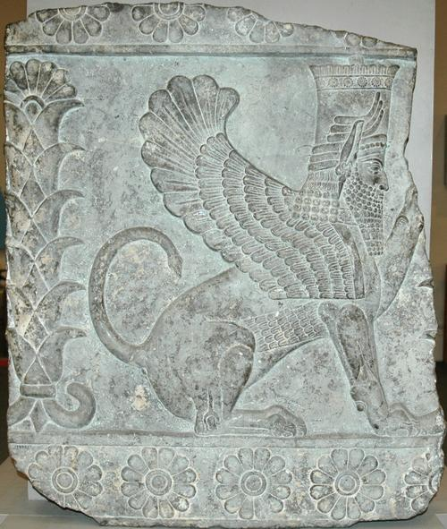
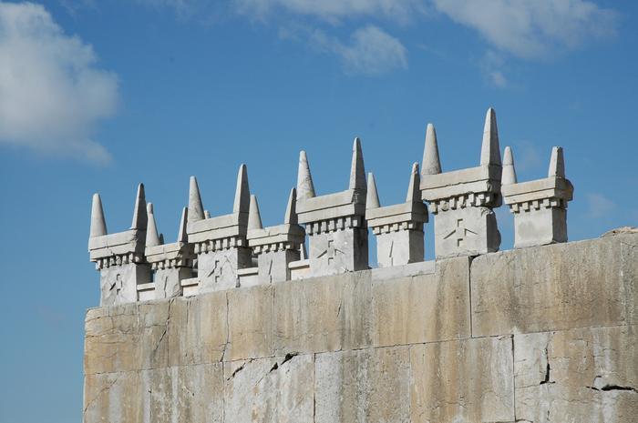

King Artaxerxes I was the son of King Xerxes and the grandson of King Darius. There are hardly any remains left of the palace of Artaxerxes today. One of the most significant items found in the ruins of the palace is a picture of a bearded sphinx. This was most likely a tribute to the Egyptian Empire who were know for using the sphinx as a popular symbol of their empire.
 